In the discussion of free will, advocates of determinism will often argue that since the current state of the world is merely a consequence of a series of causes and effects, that free will cannot possibly exist. Laplace's demon posits the following thought experiment: some supernatural entity, if it knew the entirety of information at any single point in time, could understand the universe intertemporally as vividly and precisely as he knew the present. Travelling through time is merely a process of extrapolating the present with the laws of physics. This is fundamentally the claim of causal determinism.
This simulator aims to contradict the first claim. Because of the nature of quantum indeterminacy, each ball's initial speed and direction, which ultimately causes its future positions, and its future interactions with determined balls, has no sufficient cause. It is entirely generated by a quantum number generator. Thus, Laplace's demon would have no way of knowing where a quantum ball would be, at any given time. In fact, he would not know where any ball that touched the quantum ball would be. Even your own mind's observation of such a quantum ball would defy the demon's prophecy.
Not necessarily. At least not the kind of free will we generally think of. Even if we are bounded by true randomness, we still lack true agency. While our viewing of that quantum ball at some specific position was randomly determined, we still did not choose anything. What freedom exists if you are bounded by chaos?
